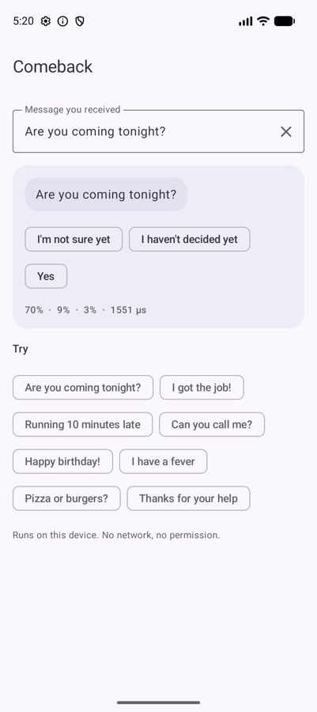
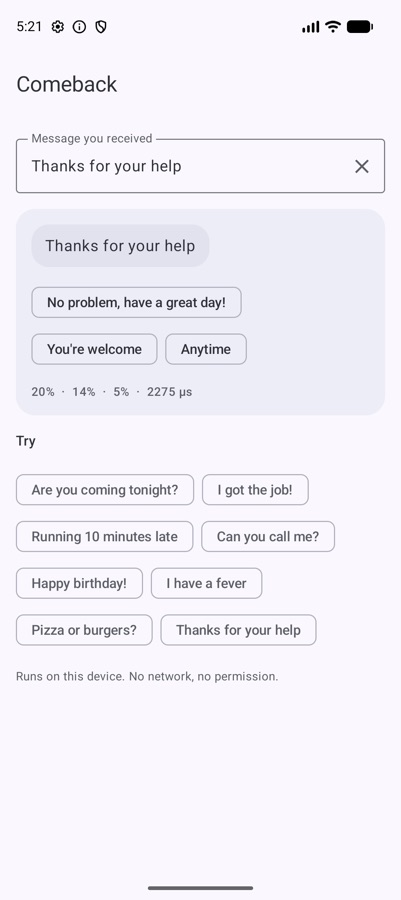
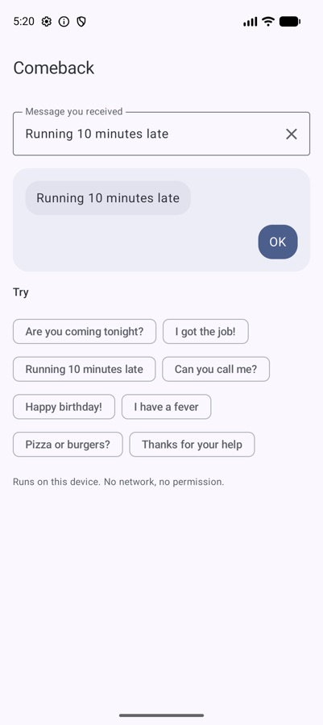

My smart reply model loses to Google's. I shipped it anyway.
I'll start with the number most people would hide: Google ML Kit's smart replies are better than mine. Then I'll tell you why I shipped mine anyway, and why you might want it.

The number
I wrote 335 messages across 16 categories — thanks, plans, yes/no questions, bad news, jokes, opinions — and asked both models for three reply chips each. A reply counted as good if a person would plausibly send it.
| Comeback | Google ML Kit Smart Reply | |
|---|---|---|
| A good reply in the top 3 | 63.6% | 72.8% |
| Top reply is good | 42.1% | 52.8% |
| Answers every message | yes | 95% |
| Size | 4.6 MB | 6.6 MB + 4.4 MB native libraries |
| Latency (Android emulator) | ~0.5 ms | ~16.6 ms (p50) |
| Dependencies | none | ML Kit + native code |
ML Kit wins on quality by about nine points. That's real, and if reply quality is the only thing you care about, use ML Kit. I mean that.
But I don't think quality is the only thing that matters for a reply chip. Here's the argument.
A reply chip is a sentence with your name on it
When your app shows a suggested reply, the user sees it as something your app said. If it's rude, odd or tone-deaf, that's on you, not on the model.
Generative reply models write text. Most of the time the text is fine. But all it takes is one Occasionally it's “Haha” under a message about a funeral, or something worse.ldquo;HahaOccasionally it's “Haha” under a message about a funeral, or something worse.rdquo; under a message about a funeral. You can filter, but you're filtering an open-ended space.
Comeback never writes anything. It picks from a fixed list of about 1,300 short replies that a human has read. About 100 replies that are technically valid but unhelpful (“What?”, “Huh”, “Yes, sir”) are never shown at all. The worst case is a reply that doesn't fit. It cannot be a reply that's offensive.
I'd rather ship a model that is sometimes unhelpful than one that is occasionally embarrassing.
And because the list is a plain file in the library, you can read it. Try doing that with a generative model.
Three chips should mean three different things
The failure I wanted to avoid most wasn't bad replies. It was three versions of the same reply: “OK”, “Okay”, “OK!”. That's one choice wearing three hats.
Comeback groups its replies by intent and shows at most one per group. For “Thanks for your help” you get No problem, have a great day!, You're welcome and Anytime — three tones, not three spellings.



Sometimes the best reply is no reply
“Pizza or burgers?” has no good canned answer. A model that must always say something will say something weak. ML Kit stays quiet on about 5% of messages; I think that instinct is right, and I wanted the app to control it.
comeback.replies("Pizza or burgers?", minConfidence = 0.2f) // [] - show no chipsAround 0.2 hides the chips for many opinion and open questions. Tune it on your own messages. An empty row of chips is a perfectly good user experience.
Speed and size are features, not specs
Half a millisecond vs sixteen doesn't sound like much. It means Comeback can score replies for every message in a long chat as it scrolls into view, on any phone, without you thinking about threads. And no native libraries means the same code gives the same chips on Android, iOS, desktop and the web, with no Google Play services requirement.
Where Comeback is strong, and where it isn't
Strong: thanks (100% good in the top 3), yes/no questions (90%), affection and goodbyes — the everyday messages where a quick tap is exactly what people want. Weak: opinions, open questions and information messages, where a short canned reply rarely fits. That's where minConfidence earns its keep.
It's English only for now.
So which should you use?
- If you want the best possible replies and you're Android-only with Play services: ML Kit.
- If you want replies that can never embarrass you, that you can read and review, that run in half a millisecond on every Kotlin platform with no native code: Comeback.
I built the second one because it's the one I wanted in my own apps. Publishing the number where it loses felt like the only honest way to recommend it.
implementation("io.github.rajumark:comeback:2.0.0")
val comeback = Comeback() // load once, off the main thread
comeback.replies("Let's meet at 7").map { it.text }The Hoverfly series. Eight small on-device models, one job each, all plain Kotlin Multiplatform with no native code. Each post is written differently, because each model taught me something different.
- Moji — emoji suggestions, told as a story
- Beacon — language detection, as a benchmark report
- Comma — punctuation restoration, as a step-by-step tutorial
- Comeback — smart replies, as an honest opinion piece (you are here)
- Emotion — emotion detection, as questions and answers
- Gatekeeper — toxicity detection, as a practical playbook
- Hideout — personal info hiding, as an audit checklist
- Chalk — doodle recognition, as an engineering deep dive